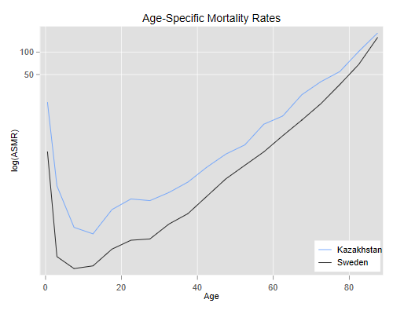
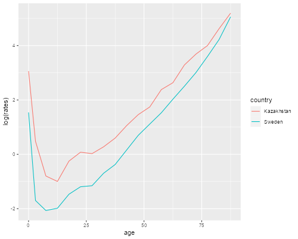

We will work through the example in Preston et al., sections 2.2 and 2.3.
I copied the counts of mid-year population and deaths by Age for Sweden and Kazakhstan from Table 2.1 into a text file that is available in the datasets section. The file is in “long” format. As usual, I show the analysis in R and Stata.
{% include srtabs.html %}. infile str10 country str5 ageg pop deaths ///
> using https://grodri.github.io/datasets/preston21long.dat, clear
(38 observations read)
. list in 1/3
┌─────────────────────────────────────┐
│ country ageg pop deaths │
├─────────────────────────────────────┤
1. │ Kazakhstan 0 174078 3720 │
2. │ Kazakhstan 01-4 754758 1220 │
3. │ Kazakhstan 05-9 879129 396 │
└─────────────────────────────────────┘
> p21 <- read.table("https://grodri.github.io/datasets/preston21long.dat",
+ header=FALSE, col.names = c("country", "ageg", "pop", "deaths"))
> head(p21, 3)
country ageg pop deaths
1 Kazakhstan 0 174078 3720
2 Kazakhstan 01-4 754758 1220
3 Kazakhstan 05-9 879129 396
The first thing to do is to calculate the age-specific rates, dividing deaths by population and multiplying by 1000:
. gen rates = 1000 * deaths / pop
> library(dplyr) > p21 <- mutate(p21, rates = 1000 * deaths / pop)
Crude death rates are just a weighted average of age-specific rates using the population in each age group as the weight. We can easily compute them like this:
. tabstat rates [fw=pop], by(country)
Summary for variables: rates
Group variable: country
country │ Mean
───────────┼──────────
Kazakhstan │ 7.423042
Sweden │ 10.54756
───────────┼──────────
Total │ 8.470285
───────────┴──────────
> group_by(p21, country) |> + summarize(crude = weighted.mean(rates, pop)) # A tibble: 2 × 2 country crude <chr> <dbl> 1 Kazakhstan 7.42 2 Sweden 10.5
The interesting result here is that mortality appears to be lower in Kazakhstan than in Sweden.
Following Preston et al., we will standardize the rates using the average of the two population compositions as the standard. To do this we calculate first the percent distribution in each country and then average the percents. While we are at it we will also calculate the average rates.
. egen pcpop = pc(pop), by(country) . egen avgcomp = mean(pcpop), by(ageg)
> p21 <- group_by(p21, country) |> + mutate(pct = pop/sum(pop)) > avg <- group_by(p21, ageg) |> + summarize(pop = mean(pct), rates = mean(rates))
Now we can easily compute the standardized rates using the average composition as the standard. Because we assigned the grouped data to p21 we can skip the grouping step.
. tabstat rates [aw=avgcomp], by(country)
Summary for variables: rates
Group variable: country
country │ Mean
───────────┼──────────
Kazakhstan │ 11.882
Sweden │ 7.374094
───────────┼──────────
Total │ 9.628045
───────────┴──────────
> summarize(p21, std = weighted.mean(rates, avg$pop)) # A tibble: 2 × 2 country std <chr> <dbl> 1 Kazakhstan 11.9 2 Sweden 7.37
We see that once we adjust for age composition the mortality rate is in fact higher in Kzakhstan than in Sweden, actually 61.1% higher.
Frequently we don’t have age-specific rates, but can easily obtain the age distribution. We can still do a form of standardization by applying the rates of one country (or any other standard) to the two age distributions. Let us use the rates for Sweden and apply them to both countries. To do this we sort by age and country, and for each age pick the second value
. bysort age (country): gen swrates = rates[2]
. tabstat swrates [fw=pop], by(country)
Summary for variables: swrates
Group variable: country
country │ Mean
───────────┼──────────
Kazakhstan │ 4.200627
Sweden │ 10.54756
───────────┼──────────
Total │ 6.327926
───────────┴──────────
> sweden <- filter(p21, country == "Sweden") > summarize(p21, istd = weighted.mean(sweden$rates, pop)) # A tibble: 2 × 2 country istd <chr> <dbl> 1 Kazakhstan 4.20 2 Sweden 10.5
So if Kazakhstan had Swedish rates the CDR would be 4.2. The ratio of the actual CDR to the expected rate under the standard age structure is known as the standardized mortality ratio (SMR) and turns out to be
. quietly sum rates [fw=pop] if country == "Kazakhstan" . scalar kzcmr = r(mean) . quietly sum swrates [fw=pop] if country == "Kazakhstan" . di "SMR = ", kzcmr/r(mean) SMR = 1.7671271
> filter(p21, country == "Kazakhstan") |> + summarize(istd = weighted.mean(sweden$rates,pop), + crude = weighted.mean(rates,pop), smr = crude/istd) # A tibble: 1 × 4 country istd crude smr <chr> <dbl> <dbl> <dbl> 1 Kazakhstan 4.20 7.42 1.77
Mortality in Kazakhstan is in fact 77% higher than it would be at Swedish rates with the observed age composition.
The indirect standardized rate for Kazakhstan is defined as the product of the SMR by the crude death rate for Sweden, 7.767 × 10.548 or 18.639. For more information see this handout.
Note: Stata has commands dstdize and
istdize for direct and indirect standardization. The Stata
Forum has an entry showing how to
use those commands to reproduce the calculations on this page.
Preston et al. show how to decompose a difference between two rates into a part due to compositional differences and a part due to differences in rates. The two components are obtained by applying the average composition to the observed rates, and by applying the observed compositions to the average rates. An important property f this decomposition is that it is exact.
. egen avgrates = mean(rates), by(ageg)
. tabstat avgrates [fw=pop], by(country)
Summary for variables: avgrates
Group variable: country
country │ Mean
───────────┼──────────
Kazakhstan │ 5.811834
Sweden │ 13.44426
───────────┼──────────
Total │ 8.36999
───────────┴──────────
> dbr <- summarize(p21, + crude = weighted.mean(rates,pop), + comp = weighted.mean(rates, avg$pop), + rates = weighted.mean(avg$rates, pop)); dbr # A tibble: 2 × 4 country crude comp rates <chr> <dbl> <dbl> <dbl> 1 Kazakhstan 7.42 11.9 5.81 2 Sweden 10.5 7.37 13.4
We see that with the same rates the older composition of Sweden would result in much higher mortality than observed. We can now verify the decomposition:
. display "Difference = " 10.55 - 7.42 /// > "; Composition = " 13.44 - 5.81 /// > "; Rates = " 7.37 - 11.88 Difference = 3.13; Composition = 7.63; Rates = -4.51
> c(-1, 1) %*% as.matrix(data.frame(dbr[,-1]))
crude comp rates
[1,] 3.124519 -4.507903 7.632422
So the observed difference of 3.13 points in the CBR between Sweden and Kazakhstan results from a compositional effect of +7.63 and a difference in rates of -4.51.
I wrote a Stata program that can do these calculations for data in
“wide” format. In net-aware Stata type
net from https://grodri.github.io/demography and check out
the ddrate command.
So far we have focused on attempts to summarize mortality in a single number, but why not look at the complete set of rates? I would like to plot the rates using the mid-points of the ages groups (with 87.5 for 85+). To compute these I first convert age from a string to numbers (1 to 19) and then figure out the midpoint of each group.
. encode ageg, gen(agei) // "05-9" becomes 3 . gen agem = 5*agei - 7.5 // 3 becomes 7.5 . replace agem = 0.5 if ageg == "0" (2 real changes made) . replace agem = 3 if ageg == "01-4" (2 real changes made)
> p21 <- mutate(p21, + agei = as.numeric(as.factor(ageg)), + age = ifelse(agei > 2, 5*agei - 7.5, ifelse(agei == 1, 0, 3)))
We then plot the rates using a log scale (otherwise we wouldn’t see much)
. twoway (line rate agem if country=="Sweden") ///
> (line rate agem if country=="Kazakhstan") ///
> , yscale(log) ylabel(50 100) ///
> title("Age-Specific Mortality Rates") ///
> xtitle("Age") ytitle("log(ASMR)") ///
> legend(order(2 "Kazakhstan" 1 "Sweden") ring(0) pos(5) cols(1))
. graph export swkzasmr.png, replace width(500) height(400)
file swkzasmr.png saved as PNG format

> library(ggplot2)
> ggplot(p21, aes(x=age, y=log(rates), color=country)) + geom_line()
> ggsave("swkzasmrr.png", width=500/72, height=400/72, dpi=72)

We see clearly that mortality is higher in Kazakhstan than in Sweden at every age. The lines are not exactly parallel, in fact the relative difference seems to become smaller at older ages. (We will discuss later how heterogeneity can produce this type of convergence.)
The aim of standardization is to control for a compositional variable. This, of course, is also one of the aims of regression analysis. I now show how one could analyze the data using Poisson regression, a method appropriate for count data.
This regression technique assumes that the number of deaths has mean (and variance) given by the product of a rate and exposure time. The log of the mean is then the log of the rate (which is modeled using a linear predictor, just as in linear regression) times the log of exposure (which is defined as an offset, or a fixed part of the linear predictor). That’s why the code below computes the log of the mid-year population counts. We also represent country using a dummy variable for Kazakhstan.
. gen logexpo = log(pop)
. gen kz = country == "Kazakhstan"
. poisson deaths i.agei kz, offset(logexpo) nolog
Poisson regression Number of obs = 38
LR chi2(19) = 315966.62
Prob > chi2 = 0.0000
Log likelihood = -1274.853 Pseudo R2 = 0.9920
─────────────┬────────────────────────────────────────────────────────────────
deaths │ Coefficient Std. err. z P>|z| [95% conf. interval]
─────────────┼────────────────────────────────────────────────────────────────
agei │
01-4 │ -2.600295 .0322872 -80.54 0.000 -2.663577 -2.537013
05-9 │ -3.823097 .0509118 -75.09 0.000 -3.922882 -3.723311
10-14 │ -4.003534 .0571946 -70.00 0.000 -4.115633 -3.891434
15-19 │ -3.29342 .043102 -76.41 0.000 -3.377899 -3.208942
20-24 │ -2.99395 .0395719 -75.66 0.000 -3.071509 -2.91639
25-29 │ -3.02696 .03777 -80.14 0.000 -3.100988 -2.952932
30-34 │ -2.743422 .033986 -80.72 0.000 -2.810034 -2.676811
35-39 │ -2.436497 .0318358 -76.53 0.000 -2.498894 -2.3741
40-44 │ -1.985014 .0285733 -69.47 0.000 -2.041017 -1.929012
45-49 │ -1.588591 .0280586 -56.62 0.000 -1.643584 -1.533597
50-54 │ -1.231015 .0229505 -53.64 0.000 -1.275997 -1.186032
55-59 │ -.6591381 .0220602 -29.88 0.000 -.7023753 -.6159008
60-64 │ -.3400267 .0199076 -17.08 0.000 -.3790448 -.3010086
65-69 │ .2502514 .0188483 13.28 0.000 .2133094 .2871935
70-74 │ .6572624 .0186292 35.28 0.000 .6207498 .693775
75-79 │ 1.094818 .0178766 61.24 0.000 1.05978 1.129855
80-84 │ 1.719851 .017546 98.02 0.000 1.685462 1.754241
85+ │ 2.451387 .0170575 143.71 0.000 2.417955 2.484819
│
kz │ .4794218 .0062738 76.42 0.000 .4671254 .4917181
_cons │ -4.445508 .0166385 -267.18 0.000 -4.478119 -4.412897
logexpo │ 1 (offset)
─────────────┴────────────────────────────────────────────────────────────────
. di exp(_b[kz])
1.6151402
> p21 <- mutate(p21, logexpo = log(pop), kz = as.numeric(country=="Kazakhstan"))
> fit <- glm(deaths ~ ageg + kz + offset(log(pop)), data = p21, family = poisson)
> coef(summary(fit))
Estimate Std. Error z value Pr(>|z|)
(Intercept) -4.4455076 0.01663845 -267.18275 0.000000e+00
ageg01-4 -2.6002957 0.03228717 -80.53649 0.000000e+00
ageg05-9 -3.8230970 0.05091182 -75.09253 0.000000e+00
ageg10-14 -4.0035340 0.05719463 -69.99842 0.000000e+00
ageg15-19 -3.2934201 0.04310201 -76.40989 0.000000e+00
ageg20-24 -2.9939502 0.03957193 -75.65843 0.000000e+00
ageg25-29 -3.0269600 0.03777003 -80.14185 0.000000e+00
ageg30-34 -2.7434226 0.03398604 -80.72205 0.000000e+00
ageg35-39 -2.4364968 0.03183579 -76.53326 0.000000e+00
ageg40-44 -1.9850146 0.02857332 -69.47090 0.000000e+00
ageg45-49 -1.5885907 0.02805860 -56.61690 0.000000e+00
ageg50-54 -1.2310144 0.02295053 -53.63773 0.000000e+00
ageg55-59 -0.6591382 0.02206023 -29.87903 3.685603e-196
ageg60-64 -0.3400269 0.01990755 -17.08030 2.080363e-65
ageg65-69 0.2502514 0.01884833 13.27711 3.142725e-40
ageg70-74 0.6572621 0.01862924 35.28122 1.139967e-272
ageg75-79 1.0948175 0.01787660 61.24306 0.000000e+00
ageg80-84 1.7198508 0.01754596 98.01978 0.000000e+00
ageg85+ 2.4513869 0.01705754 143.71277 0.000000e+00
kz 0.4794215 0.00627376 76.41694 0.000000e+00
> exp(coef(fit)["kz"])
kz
1.61514
Exponentiating the coefficient of Kazakhstan, we see that on average age-specific mortality is 61.5% higher than in Sweden, a result very similar to the 61.2% that we obtained using direct standardization.
An advantage of the regression approach is that one can easily control for multiple confounders. Also, we can test for the presence of an interaction, which would question the validity of the additive model underlying direct standardization. In this case, adding the interaction would make the model saturated for this data, so we just test goodness of fit.
. estat gof
Deviance goodness-of-fit = 2218.545
Prob > chi2(18) = 0.0000
Pearson goodness-of-fit = 2026.899
Prob > chi2(18) = 0.0000
> data.frame(deviance = deviance(fit), df = fit$df.residual) deviance df 1 2218.549 18
The deviance of 2218 on 18 df is highly significant, so we conclude that the rates are not proportional. With data based on national counts, however, even small differences can be statistically significant. This interaction represents less than one percent of the combined effect of age and country.
. di r(chi2_d)/e(chi2) .00702145
> deviance(fit)/(fit$null.deviance - deviance(fit)) [1] 0.007021467
If the discussion in the last section doesn’t make much sense to you, don’t worry. Just make a note to come back and read it again after taking a course on generalized linear models.
Updated 22-Jan-2016.